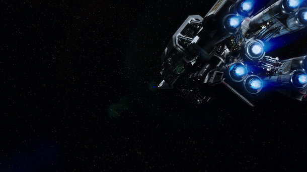

Space Missions:
Return To Home Page
Whenever a player wishes to move something from one body in a solar system to another body,
they do so by buying a Space Mission. The cost of a space mission is equal to the absolute difference
between position value of the starting body and the position value of the destination. The value is
then multiplied by the value of the mission type. In general, once a mission is launched, its existence
is public knowledge and it is listed as an active mission on the overhead projector.
(NOTE: Traveling to a moon from its parent body automatically costs 2 Position difference)

Example: Player A wants to move their ship from Earth to Jupiter. Earth has a position value of 1. Jupiter has
a position value of 15. Therefore the position cost is 14. Player A wants to get there fast and elects to do a
high G burn (which will get them there in half a turn with +1 initiative) this mission type has a cost factor of 3.
Therefore, the total cost of the mission is (14 position value difference times 3) 42.
Mission Types:
Gravity Assist:
Gravity assist missions are missions that use minimal amounts of fuel and rely heavily on gaining gravity
assists from various planets.
Gravity assist mission take 3 turns to complete and reduce the cost of the mission to 1/10.
Arrives with an initiative of 0
Quarter G Burns:
These missions use constant fuel all the way but only accelerate using a quarter of a g of thrust.
Quarter G Burn missions take 2 turns to complete and reduce the mission cost by half.
Arrives with an initiative of 1.
Half G Burns:
Same as above but using a half g of continuous thrust.
Half G burns are your standard mission. They do no change the base mission cost.
They arrive at the beginning of next turn with an initiative of 3.
Full G Burns:
These are the first of the half turn burns. They can only be launched during the reaction
phase and they arrive during the arrival phase of the same turn.
Full G Burns double the cost of the mission and they arrive with an initiative of 2.
Note it means they go before a quarter G burn mission but after a half G mission.
High G Burns:
These are high G burns all the way and the crew is often required to sleep for most of the mission
in order to survive the high gravity.
High G burns are launched during the reaction phase and arrive during the arrival Phase.
They arrive with an initiative of 4. Which means they always go first.
High G burns increase the cost of the mission by 3.
Initiative:
Whenever two units engage in combat or arrive at the same place at the same time, initiative comes into play.
Units gain their initiative either from being in orbit (2) or from thier mission type.
The higher a unit's initiative the better it's position.
Example of initiative:
Example A: Player one launches a transport on a 2-turn mission for Ganymede carrying a missing colony.
The next turn, Player two launches a transport on a one turn mission for Ganymede, also carrying a mining colony.
The two missions arrive at the same time. Since the Player two’s mission has a higher initiative on arrival,
player two will be able to place their colony first. If by the time it arrives, Player One’s mission has no place to land,
the mining colony cannot land.
Example B:
Player two launches warships on a 1 turn mission towards one of Player 2s colonies. During the reactions phase,
Player one notices the launch and sends ships to intercept. Player one does not have the cash for a high G mission so
ops for a full G mission. Due to initiative order, Player two will be able to conduct one full round of attacks BEFORE
Player one’s ships arrive and join the battle. Arriving at the same time: If to missions arrive at the same time with
the same initiative. Players may bid credits to see which one arrives first. If neither player bids, roll a dice.
Return To Home Page